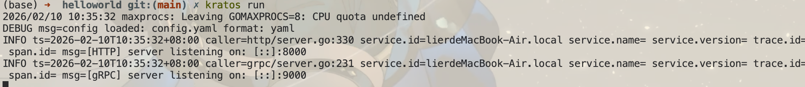
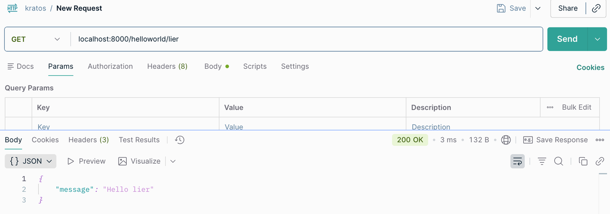
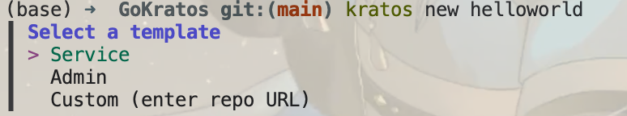

Kratos 微服务框架

Kratos: An elegant toolkit for Go microservices.
Kratos是一个基于golang实现的面向微服务的治理框架，它提供了便捷的功能，帮助你从零开始快速构建一个可靠的应用。
他是 B 站开源的一个 golang 微服务框架，也是主流的微服务框架之一。
名字来源于:《战神》游戏以希腊神话为背景，讲述奎托斯（Kratos）由凡人成为战神并展开弑神屠杀的冒险经历。
简介
安装和简单使用
安装
安装前置
安装指令
go install github.com/go-kratos/kratos/cmd/kratos/v2@latest
kratos upgrade
go install github.com/google/wire/cmd/wire@latest安装之后查看相关操作
(base) ➜ GoFramwork git:(main) kratos -h
Kratos: An elegant toolkit for Go microservices.
Usage:
kratos [command]
Available Commands:
changelog 生成 Kratos 变更 log
completion 为指定的Shell生成自动补全脚本
help 帮助指令
new 生成一个服务模板
proto 生成 proto 文件
run 运行项目
upgrade 升级 Kratos 工具
Flags:
-h, --help help for kratos
-v, --version version for kratos
Use "kratos [command] --help" for more information about a command.Demo
根据官方的提示创建一个Kratos HelloWord
首先使用 new 创建项目
kratos new helloworldnew 完成后我们发现可以选择不同的模板，这里我们选择第一个service

等待生成完成，这是生成的项目结构
.
├── api # API 定义层 (Protocol Buffers)
│ └── helloworld
│ └── v1
│ ├── error_reason.pb.go # [生成] 错误原因的 Go 代码
│ ├── error_reason.proto # 定义业务错误原因 (Enum)
│ ├── greeter_grpc.pb.go # [生成] gRPC 服务端和客户端代码
│ ├── greeter_http.pb.go # [生成] Kratos HTTP 服务代码 (路由、编解码)
│ ├── greeter.pb.go # [生成] 请求/响应消息的 Go 结构体
│ └── greeter.proto # 定义服务接口 (RPC) 和消息结构 (Message)
├── cmd # 程序入口 (Entry Point)
│ └── helloworld
│ ├── main.go # 主程序入口：负责初始化资源、依赖注入、启动服务、监听退出信号
│ ├── wire_gen.go # [生成] Wire 依赖注入生成的具体代码 (不要手动修改)
│ └── wire.go # Wire 依赖注入的声明文件，定义 ProviderSet
├── configs # 配置文件
│ └── config.yaml # 具体的配置内容 (如数据库地址、端口、日志级别等)
├── Dockerfile # 容器化构建脚本
├── go.mod # Go 模块依赖定义
├── go.sum # Go 模块依赖校验和
├── internal # 内部业务逻辑 (Go 规范：外部项目无法 import 此目录内容)
│ ├── biz # [业务逻辑层 / 领域层] (Domain Layer)
│ │ ├── biz.go # 定义 biz 层的 ProviderSet
│ │ ├── greeter.go # 定义领域对象 (Entity) 和 业务接口 (Repo Interface)，不依赖具体实现
│ │ └── README.md
│ ├── conf # [配置定义层]
│ │ ├── conf.pb.go # [生成] 配置文件的 Go 结构体
│ │ └── conf.proto # 定义配置文件的结构 (将 YAML 映射为强类型 struct)
│ ├── data # [数据访问层 / 基础设施层] (Infrastructure Layer)
│ │ ├── data.go # 初始化数据库/Redis 连接，定义 data 层的 ProviderSet
│ │ ├── greeter.go # 实现 biz 层定义的 Repo 接口 (数据库 CRUD、缓存、RPC 调用)
│ │ └── README.md
│ ├── server # [服务实例层]
│ │ ├── grpc.go # 初始化 gRPC Server
│ │ ├── http.go # 初始化 HTTP Server
│ │ └── server.go # 定义 server 层的 ProviderSet
│ └── service # [应用服务层] (Application Layer)
│ ├── greeter.go # 实现 api 定义的 protobuf 接口，负责 DTO -> DO 转换，编排 biz 逻辑
│ ├── README.md
│ └── service.go # 定义 service 层的 ProviderSet
├── LICENSE # 许可证文件
├── Makefile # 项目管理脚本 (生成 API、编译、运行、测试等命令)
├── openapi.yaml # [生成] OpenAPI/Swagger 接口文档
├── README.md # 项目说明文档
└── third_party # 第三方依赖的 Proto 文件 (用于生成代码)
├── errors # Kratos 错误模型定义
│ └── errors.proto
├── google # Google 官方 Proto (API 注解、HTTP 映射、通用类型等)
│ ├── api
│ │ ├── ...
│ └── protobuf
│ ├── ...
├── openapi # OpenAPI 生成相关的 Proto 定义
│ └── v3
│ ├── ...
├── README.md
└── validate # 参数校验规则 Proto 定义
├── README.md
└── validate.proto之后我们进入目录，运行依赖下载指令
cd helloworld
go mod download我们也可以自己编写proto源码、wire等等，通过 Kratos 生成相应的代码
go generate ./...然后是运行项目
kratos run

依赖注入 wire
参见文章：控制反转和依赖注入
Kratos的配置
配置源
文件json yaml
环境变量 env
配置中心 apollo consul
读取配置
c.Load 和 c.Scan, 取值c.Value
c.Watch 配置热加载
合并
Resolver 自定义
Codec自定义
配置结构体
internal/conf/conf.pb.go 文件中的 Bootstrap
程序添加配置的核心流程
1. 修改 internal/conf/conf.proto 文件， 用pb定义配置
2. 生成配置对应的Go代码项目目录下执行 make config如果没有装make命令，那么就执行
protoc --proto_path=./internal \--proto_path=./third_party \--go_out=paths=source_relative:./internal \internal/conf/conf.proto3. 修改configs配置文件
注意事项
pb文件要语法写对
改完pb文件一定记得要生成Go代码
配置文件要跟Go代码里的结构体对应上
配置文件的语法要写对
自定义HTTP返回
创建响应编码器并替换默认编码器，具体demo可见项目：httpencoder和http
package server
import (
"net/http"
kratoshttp "github.com/go-kratos/kratos/v2/transport/http"
kratosstatus "github.com/go-kratos/kratos/v2/transport/http/status"
"google.golang.org/grpc/status"
)
// 定义 HTTP 响应编码器
// 覆盖默认的 DefaultResponseEncoder, 通过 http.ResponseEncoder() 配置，注入到 http.Server() 中
type httpResponse struct {
Code int32 `json:"code"`
Msg string `json:"msg"`
Data any `json:"data"`
}
func ResponseEncoder(w http.ResponseWriter, r *http.Request, v any) error {
if v == nil {
return nil
}
// 判断是否是重定向
if rd, ok := v.(kratoshttp.Redirector); ok {
url, code := rd.Redirect()
http.Redirect(w, r, url, code)
return nil
}
// 构造自定义的响应结构体
resp := &httpResponse{
Code: http.StatusOK,
Msg: "success",
Data: v,
}
// 响应数据
codec, _ := kratoshttp.CodecForRequest(r, "Accept")
data, err := codec.Marshal(resp) // json.Marshal
if err != nil {
return err
}
// 设置响应头 Content-Type:application/json
w.Header().Set("Content-Type", "application/"+codec.Name())
_, err = w.Write(data)
return err
}
// 自定义的错误响应编码器
func errorEncoder(w http.ResponseWriter, r *http.Request, err error) {
if err == nil {
return
}
resp := new(httpResponse) // 能从err里面解析出错误码的
if gs, ok := status.FromError(err); ok {
resp = &httpResponse{
Code: int32(kratosstatus.FromGRPCCode(gs.Code())),
Msg: gs.Message(),
Data: nil,
}
} else {
resp = &httpResponse{
Code: http.StatusInternalServerError, // 500
Msg: "内部错误",
}
}
codec, _ := kratoshttp.CodecForRequest(r, "Accept")
body, err := codec.Marshal(resp)
if err != nil {
w.WriteHeader(http.StatusInternalServerError)
return
}
w.Header().Set("Content-Type", "application/"+codec.Name())
w.WriteHeader(int(resp.Code))
_, _ = w.Write(body)
}// 替换默认的 HTTP 响应编码器
opts = append(opts, http.ResponseEncoder(ResponseEncoder))
// 替换默认的错误响应编码器
opts = append(opts, http.ErrorEncoder(errorEncoder))日志
为了方便使用，Kratos定义了两个层面的抽象，Logger统一了日志的接入方式，Helper接口统一的日志库的调用方式。
Kratos的日志库主要有如下特性：
Logger用于对接各种日志库或日志平台，可以用现成的或者自己实现
Helper是在您的项目代码中实际需要调用的，用于在业务代码里打日志
Filter用于对输出日志进行过滤或魔改（通常用于日志脱敏）
Valuer用于绑定一些全局的固定值或动态值（比如时间戳、traceID或者实例id之类的东西）到输出日志中
中间件
